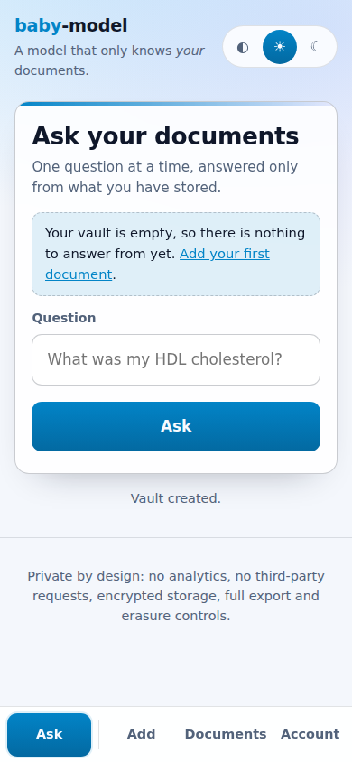
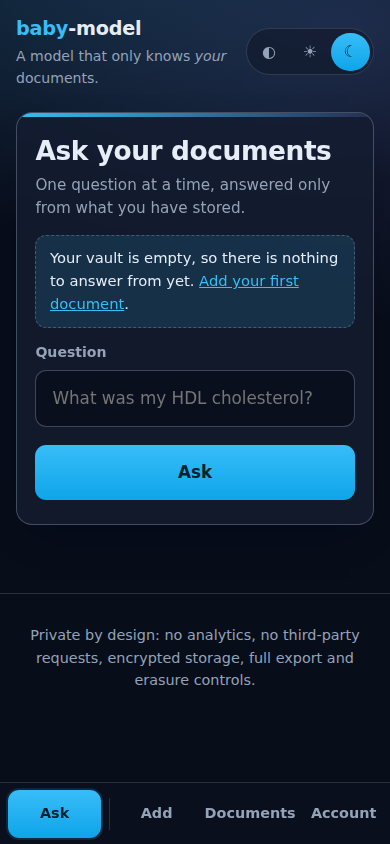
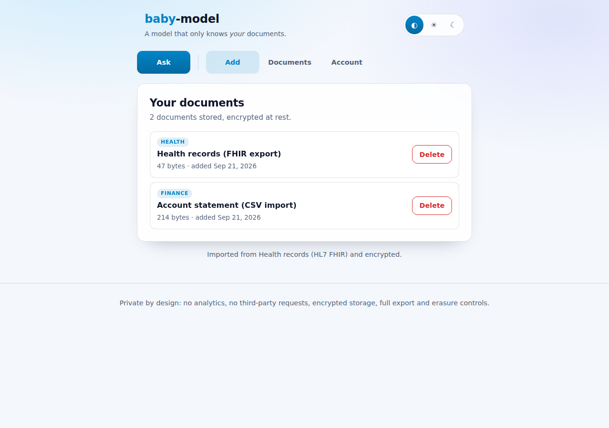
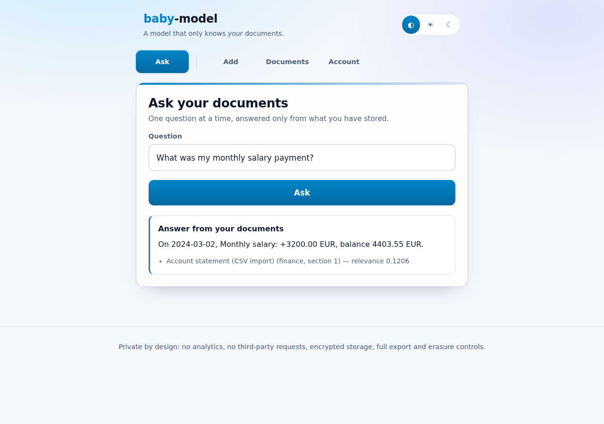
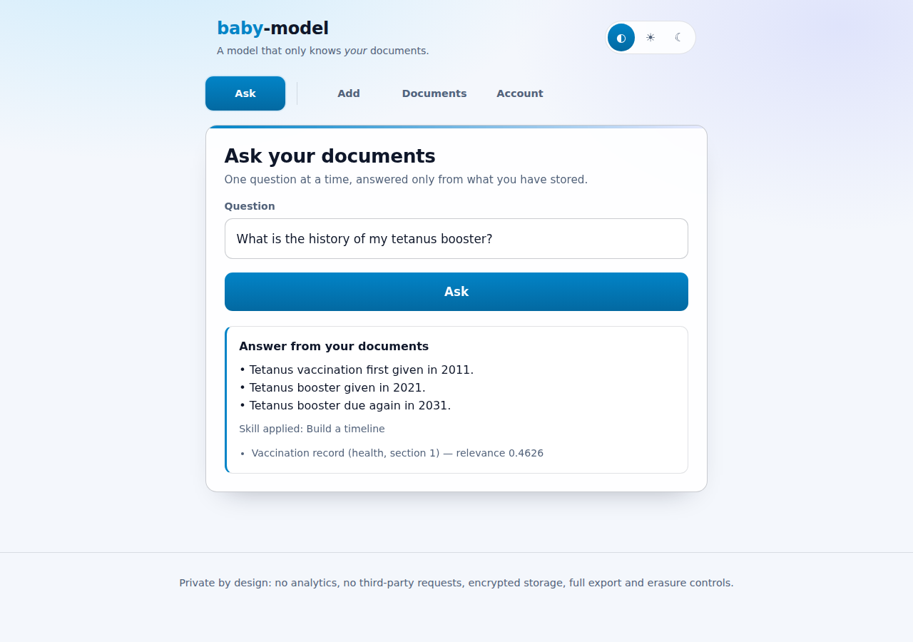

baby-model
A model that only knows your data.


Website: https://charles2ke.github.io/baby-model/
baby-model is a self-hosted portal that learns from the documents you give it —
health records, finance statements, professional paperwork, education certificates
and anything else — and answers questions only from those documents. Every
answer is extracted verbatim from your own files and cited; when your documents
do not contain the answer, the model says so instead of guessing.
Nothing is sent to any third-party model provider: retrieval, ranking and answer extraction all run locally inside the application process.
Contents
- Quick start
- Try it in two minutes
- How it works
- Features
- Screenshots
- Security and privacy design
- Architecture
- Skills
- Real-world integrations
- Configuration
- Testing
- Troubleshooting
- Documentation site
- Contributing
- License
Quick start
Requirements: Node.js 20 or newer (CI runs on Node 22) and npm.
git clone https://github.com/charles2ke/baby-model.git
cd baby-model
npm install
npm run dev # http://localhost:3000
Open http://localhost:3000, create an account, add a document on the Add
page — paste some text or import a provider export — then ask a question about it
on the Ask page. In development a master key is generated for you under
./data; in production you must supply your own:
export MASTER_KEY=$(openssl rand -hex 32) # store this in your secret manager
export NODE_ENV=production
npm run build && npm start
Everything is stored on the machine you run it on: a single SQLite file in
DATA_DIR by default, with documents encrypted at rest. See
Configuration for the environment variables.
Try it in two minutes
Start the server, open http://localhost:3000 and choose Create account with any email and a password of at least 12 characters.
Go to Add, title the document
Annual blood panel 2024, keep the categoryHealth, and paste:Annual blood panel taken on 12 March 2024. HDL cholesterol was 62 mg/dL and LDL cholesterol was 98 mg/dL. Blood pressure measured 118 over 76.Save it, then go to Ask and ask
What was my HDL cholesterol?— the answer comes back as the sentence from your own document, cited.Ask
Who won the World Cup in 1998?— the model refuses, because your documents do not say.
How it works
- Add — a document (pasted text, an uploaded UTF-8 file or a provider export converted locally by an integration) is split into sentences and grouped into overlapping chunks.
- Store — document text and chunks are sealed with AES-256-GCM under a
per-user data key, which is itself wrapped with the server
MASTER_KEY, and written to SQLite alongside the owner'suser_id. - Retrieve — a question is tokenised and ranked against only that user's chunks with TF-IDF cosine similarity.
- Answer — the best-matching sentences are returned verbatim with citations back to the document and section; a skill may reshape them into a summary, timeline or list of figures. If nothing relevant is found, the model refuses instead of guessing.
No step calls an external service, and no step can read a chunk that belongs to another account.
Features
- Private document vault — upload or paste UTF-8 text documents, tagged as
health,finance,professional,educationorother. - Real-world imports — bring in the files the systems that hold your data
actually produce: HL7 FHIR health exports from a patient portal or Apple
Health, CSV statements from a bank or card issuer,
.emlmessages from a mail client and.icscalendar exports. Each file is converted to readable text locally, then stored encrypted like any other document. - Grounded question answering — TF-IDF retrieval over your own chunks plus extractive answering, with citations back to the document and section.
- Skills — reusable, Claude-style skills (a name, a description of when to use it and a deterministic procedure) reshape a grounded answer into a summary, a timeline or a list of figures when the question calls for it, without ever adding anything your documents do not say.
- One job per page — asking a question, adding a document, browsing the vault and managing the account each get their own page, reached from a tab bar.
- Feedback on every action — buttons show their work (
Asking…,Saving…,Deleting…) and disable themselves while a request is in flight, so a slow save is visible and cannot be submitted twice. - Guidance when the vault is empty — the Ask page points a new account at the Add page instead of answering nothing, and the Documents page shows how much is stored, each item with a readable size and the date it was added.
- Safe by default — deleting a document or the account asks first, the sign-in password can be revealed while typing it, and a status message is cleared when you move to another page rather than following you around.
- Mobile first — a thumb-friendly bottom tab bar, full-width controls, large tap targets and safe-area padding on phones; the same tabs move to the top on larger screens.
- Light and dark themes — a switch in the header follows the device theme by default and can be pinned to light or dark; the choice is remembered locally and applied before the first paint.
- Explicit refusals — if nothing relevant is found, the model answers “I can only answer from your own documents…”, never inventing facts.
- Strict isolation — every query and document lookup is scoped by the owner's user id, so one account can never read another account's data.
- Data rights built in — one-click export (portability) and irreversible account erasure (right to be forgotten).
Screenshots
Sign in or create a private, encrypted vault

Health, finance, professional and education documents stored encrypted

Answers are extracted from your documents and always cited

Questions your documents cannot answer are refused instead of guessed

A second account can neither see nor query another user documents

One click erases the account and every stored document

Asking a question is a page of its own and the primary action on mobile

Every page does one thing, with a thumb-friendly tab bar on small screens

A light theme for bright rooms, remembered across visits

A dark theme, or simply follow the theme of the device

Bank statements and health records imported straight from provider exports

Imported real-world data is answerable and cited like any other document

Skills reshape a grounded answer into a timeline, a summary or a list of figures

Security and privacy design
| Concern | Control |
|---|---|
| Password storage | scrypt (N=16384, r=8, p=1) with a per-password random salt |
| Session handling | 256-bit random tokens, only their SHA-256 hash is stored, HttpOnly + SameSite=Strict (+ Secure in production) cookies, server-side expiry and revocation |
| CSRF | Per-session CSRF token required on every state-changing request |
| Encryption at rest | Documents and chunks are encrypted with AES-256-GCM using a per-user data key, which is itself wrapped with the server MASTER_KEY |
| Database | SQLite file created with 0600 permissions inside a 0700 data directory |
| Authorisation | Every document, chunk and export query filters on user_id; cross-account access returns 404 |
| Transport & headers | helmet with a strict CSP (default-src 'self', no framing, no object sources), Referrer-Policy: no-referrer, Cache-Control: no-store |
| Abuse protection | Global, per-question and per-authentication rate limits, upload size limits, UTF-8 text-only uploads |
| Crawlers & AI scrapers | robots.txt disallows every user agent (including GPTBot, Google-Extended, ClaudeBot, CCBot, PerplexityBot and friends) and every response carries X-Robots-Tag: noindex, nofollow, noarchive, nosnippet, noimageindex, notranslate, noai, noimageai. Nothing beyond the sign-in page is reachable without a session anyway |
| Prompt injection | Instruction-like passages, hidden control characters and exfiltration URLs found in stored documents are redacted from answers, excerpts and titles; answers stay extractive and never leave the server |
| Auditability | Append-only audit_log of registrations, logins, document changes, questions, exports and erasures (no document content is logged) |
| No third parties | No analytics, no external fonts or CDNs, no outbound model API calls |
Data-protection compliance notes
- Data minimisation — the only personal identifier stored is the email address used to sign in; documents are opaque ciphertext at rest.
- Purpose limitation — stored content is used solely to answer that user's own questions.
- Right of access & portability —
GET /api/account/exportreturns the full account content as JSON. - Right to erasure —
DELETE /api/accountremoves the user, documents, chunks and sessions, and anonymises the audit trail. - No indexing or training — the portal asks search engines and AI crawlers not
to index, archive, snippet or train on anything; confidential content is in any
case only served to an authenticated session over
Cache-Control: no-store. - Key management — set
MASTER_KEY(32 bytes, hex) from your secret manager in production; the server refuses to start in production without it.
Architecture
web/ Static portal: one page per task (#/ask, #/add, #/documents,
#/account), mobile first, CSP-friendly, no third-party requests
server/src/app.ts Express application: auth, documents, question answering
server/src/lib/
config.ts Environment configuration and master key loading
crypto.ts scrypt password hashing, AES-256-GCM sealing, key wrapping
db.ts SQLite schema and hardened file permissions
store.ts Owner-scoped data access for users, sessions and documents
text.ts Tokenisation, sentence splitting and chunking
integrations.ts Real-world connectors: FHIR, bank CSV, email, iCalendar
skills.ts Claude-style skills that reshape grounded answers
model.ts TF-IDF retrieval and extractive, cited answering
tests/unit/ Vitest unit and API tests (100% coverage enforced)
tests/e2e/ Playwright end-to-end tests that also produce the screenshots
API
| Method | Endpoint | Description |
|---|---|---|
POST |
/api/auth/register |
Create an account and start a session |
POST |
/api/auth/login |
Sign in |
POST |
/api/auth/logout |
Revoke the current session |
GET |
/api/auth/me |
Current account and CSRF token |
GET |
/api/documents |
List your documents |
POST |
/api/documents |
Add a document (JSON body or file upload) |
GET |
/api/documents/:id |
Read one of your documents |
DELETE |
/api/documents/:id |
Delete one of your documents |
GET |
/api/integrations |
List the real-world import connectors |
POST |
/api/integrations/:id/import |
Import a provider export as a document |
GET |
/api/skills |
List the skills the model can apply |
POST |
/api/ask |
Ask a question answered only from your documents |
GET |
/api/account/export |
Export everything stored about you |
DELETE |
/api/account |
Erase your account and all data |
Skills
Skills follow the shape of Claude's Agent Skills: each one declares a name, a description that says when it should be used, and the procedure itself. Here the procedure is ordinary code running in this process, and it is only ever handed sentences that were already extracted from your own documents — so a skill can change how an answer is presented, never what it claims.
| Skill | Use when the question asks for | Result |
|---|---|---|
summarise |
a summary, an overview, a recap or the key points | the matching sentences as bullet points |
timeline |
when something happened, a history or the order of events | the dated sentences, oldest first |
figures |
amounts, balances, rates, totals or how much something was | the sentences that carry a figure, with the figures listed |
The model picks at most one skill per question, by matching the words of the question against the skill triggers, and falls back to the plain extractive answer when no skill applies or the chosen skill has nothing to contribute. The answer payload names the skill that shaped it, and the portal shows it under the answer. Citations, refusals and owner scoping are unchanged.
Real-world integrations
Integrations are file-based and offline by design: you export your data from the provider yourself and hand the file to your vault. The portal never stores a provider credential, never calls a provider API and never sends your documents anywhere, so connecting a new source cannot widen the blast radius of an account takeover at either end.
| Connector | Typical source | File | Stored as |
|---|---|---|---|
fhir |
Patient portal, hospital record, Apple Health, Epic/Cerner export | .json FHIR R4 bundle |
Observations, conditions, medications, allergies, immunisations, procedures and reports as plain sentences (health) |
bank-csv |
Bank, credit card or payment account statement | .csv |
One sentence per transaction plus a totals summary, with dates, descriptions, amounts, currencies and balances (finance) |
email |
Gmail, Outlook, Apple Mail or any IMAP client | .eml |
Subject, sender, recipients, date and the decoded text body (professional) |
icalendar |
Google Calendar, Outlook, Apple Calendar, booking confirmations | .ics |
One sentence per event with its start, end, location and notes (professional) |
Pick the source on the Add page, upload the export (or paste it), and adjust the title and category if the suggested ones do not fit. Files that a connector cannot read are refused with an explanation instead of being stored, and the imported text is chunked, encrypted and cited exactly like a pasted document.
Configuration
| Variable | Default | Purpose |
|---|---|---|
MASTER_KEY |
generated in development | 32-byte hex key wrapping per-user data keys (required in production) |
DATA_DIR |
./data |
Directory for the database and development key |
DATABASE_FILE |
$DATA_DIR/baby-model.db |
SQLite database location |
PORT |
3000 |
HTTP port |
MAX_UPLOAD_BYTES |
2097152 |
Maximum document size |
SESSION_TTL_MS |
43200000 |
Session lifetime |
AUTH_RATE_LIMIT |
20 |
Authentication attempts per 15 minutes |
Testing
npm run test:coverage # unit + API tests, 100% coverage thresholds
npm run test:e2e # Playwright end-to-end tests and screenshots
The end-to-end run also regenerates the screenshots in screenshots/.
Playwright needs its browser once: npx playwright install --with-deps chromium.
What the tests cover
| Suite | What it proves |
|---|---|
tests/unit |
Crypto, storage, retrieval, skills, integrations and every API route, at 100% coverage |
tests/e2e |
Sign-up, adding and importing documents, grounded answers and refusals, account isolation, deletion and erasure, mobile layout, themes and the interaction details above |
Coverage
| Metric | Coverage |
|---|---|
| statements | 100% |
| branches | 100% |
| functions | 100% |
| lines | 100% |
Troubleshooting
| Symptom | Cause and fix |
|---|---|
MASTER_KEY environment variable is required in production on start |
Production refuses to run without a key. Set MASTER_KEY to 32 bytes of hex, e.g. openssl rand -hex 32, from your secret manager |
Only UTF-8 text documents are supported when uploading |
The file is binary (PDF, image, Office document). Export or convert it to text first, or use a connector for a provider export |
| An import is refused with an explanation | The file does not match the chosen source, e.g. a FHIR bundle that is not valid JSON. Pick the matching source or paste the contents as plain text |
Too many attempts, please try again later. while signing in |
The authentication rate limit. Wait, or raise AUTH_RATE_LIMIT in development |
| Answers refuse everything | The vault is empty or nothing matched. Add a document with the wording you expect to ask about; the Ask page says so when there is nothing stored |
npm run test:e2e cannot start a browser |
Run npx playwright install --with-deps chromium once |
Documentation site
npm run docs:build refreshes the screenshot gallery and coverage table in this
README and regenerates docs/index.html, which CI publishes to GitHub Pages at
https://charles2ke.github.io/baby-model/.
Contributing
| Script | What it does |
|---|---|
npm run dev |
Start the server with reload on http://localhost:3000 |
npm run typecheck |
TypeScript check without emitting |
npm run build / npm start |
Compile to dist/ and run the compiled server |
npm test / npm run test:coverage |
Vitest unit and API tests |
npm run test:e2e |
Playwright end-to-end tests and screenshots |
npm run docs:build |
Refresh the generated README sections and docs/index.html |
Before opening a pull request, run npm run typecheck, npm run test:coverage
and npm run test:e2e; CI runs the same steps. The screenshot gallery and the
coverage table above are generated — edit only the text outside the
<!-- screenshots --> and <!-- coverage --> markers. Security issues should
follow SECURITY.md rather than a public issue.